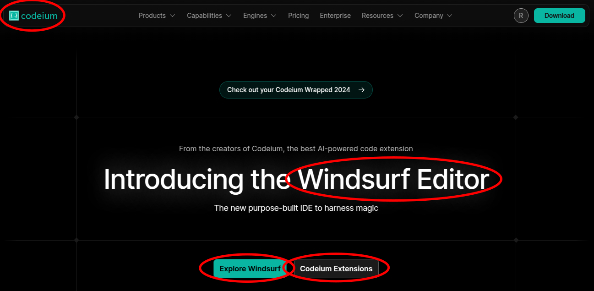
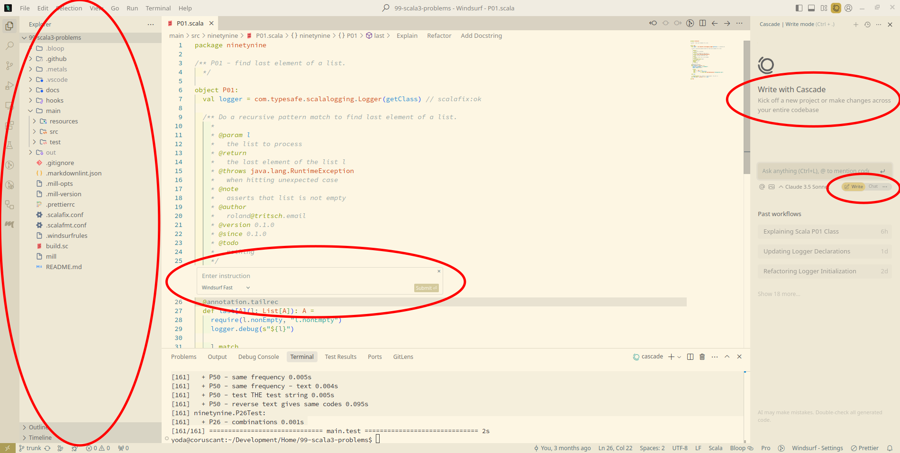

Tour of Windsurf
CHAI Meetup
25-Feb-2025
roland@tritsch.email
My personal (Whirl-Wind) Tour of Windsurf
!!! Not a Tutorial !!!
- I am going to talk fast!
- We are recording this!
- No need to take notes!
- Slides are available online/later/qr-code!
Roland
- (Fractional) CTO, VP Engineering, …
- Specialized in early (remote-first) start-ups
- The Extreme Digital Nomad, The Augmented Software Engineer
- Ex-IONA, Ex-Gilt, Ex-Nitro, Ex-Community, …
- Distributed-Systems, Databases, Event-based Systems, …
- Functional Programing (Haskell, Scala, Elixir/Erlang, …)
Roland

Roland

A Suggestion …
… to put some structure into the discussion :) …
The Stack
- The Language (e.g. Scala)
- The IDE (e.g. VsCode)
- The Integration (e.g. GitHub Copilot)
- The LLM (e.g. chatGPT-4o)
Main Capabilities
- A chat for research
- Stack Overflow on steroids
- Generate code
- Implementations and tests
- In the chat, inline and code completions
- Fix code
- Compile-time errors and run-time errors
- Explain code
- Refactor code (with agents/tools)
- (And now) Extent AI with more/your tools (MCP Servers)
The Stack (today)
- The Language (Scala)(not important)
- The IDE (Windsurf)
- The Integration (Codeium)
- The LLM (Claude-3.5-Sonet)
The 99-Scala-Problems
Inspired by the "99 Problems" originally from Prolog, this collection includes a variety of tasks ranging from simple to complex, covering topics such as recursion, pattern matching, data structures, and algorithms. Participants are encouraged to solve the problems in Scala, enhancing their understanding of the language and functional programming concepts. The problems provide a hands-on way to practice and learn by implementing solutions to common algorithmic challenges.
(as explained by chatGPT)
Windsurf
- Windsurf/Codeium
- Tight integration (like cursor.com)
- Had Cascade (before GHCP had Edits)

Demo - Disclaimer
AI demos are hard. They are non-deterministic.
They are different … every time. All the time.
Bear with me …
Demo - Tool

Demo - Tool
- Cascade (Write mode/Chat mode)
- Inline completion/ask
- Context management
- (Open) Files (e.g. Problem/Context file)
- Lines
- Use-case: Search-Replace/Rename-Symbol (one file)
- Use-case: Keyboard-Macros
Demo - Refactoring
- Making changes to (a lot of) files
- Describe an outcome
- Be prepared to help with the how
- Be prepared to get stuck
- Say yes … (a lot)